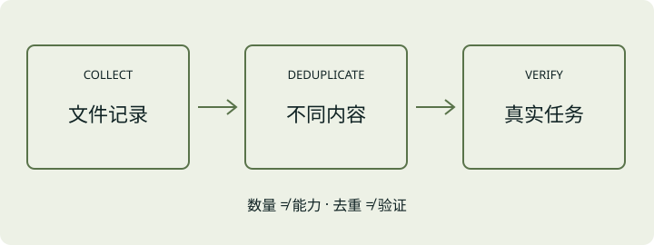

生成更快之后，网络和工具可能成为下一处瓶颈。
OpenAI 的10月8日更新日志宣布，GPT-6.1 Sol 在 Responses API 支持 Ultrafast，以缩短生成 token 之间的时间。通过 service_tier="ultrafast" 启用，所有 API 用户均可使用，但该档位有独立限流，成本也更高。
官方文档建议高频调用工具的应用采用持久 WebSocket，避免网络开销抵消延迟收益。这一建议值得与模型加速一起看：用户等待的是任务完成，而不仅是文字出现。
两则近期动态，一篇论文选读，再加一则科技趣闻。
LESS NOISE. MORE SIGNAL.QUICK JUMP
为理解而读，为实践而选。
EDITOR’S NOTE / 编者的话
延迟更低，不等于整个任务同比提速；审查意见更多，不等于代码更可靠；技能文件更多，也不等于能力更强。本期把三个容易混淆的数字拆开看。所选动态发布于10月上旬，论文为历史选读，不冒充过去24小时快讯。
THE SIGNAL / 近期动态
先问指标衡量什么。
再把变化带回工作流。
生成更快之后，网络和工具可能成为下一处瓶颈。
OpenAI 的10月8日更新日志宣布，GPT-6.1 Sol 在 Responses API 支持 Ultrafast，以缩短生成 token 之间的时间。通过 service_tier="ultrafast" 启用，所有 API 用户均可使用，但该档位有独立限流，成本也更高。
官方文档建议高频调用工具的应用采用持久 WebSocket，避免网络开销抵消延迟收益。这一建议值得与模型加速一起看：用户等待的是任务完成，而不仅是文字出现。
一条真正有用的提醒，比十条模糊建议更值得看。
GitHub 于10月5日发布 ReviewBench，收录187个公开开源仓库中的219个 PR，覆盖19种语言。样本设计参考了1.039亿个 GitHub PR 的分布；后一个数字是分布分析规模，不是实际测试集大小。
参考问题集结合人工审查、模型和静态分析，再按精确率、召回率、严重程度等维度评价。这是 GitHub 提出的审查基准，并非对任何产品效果的保证。
THE READING ROOM / 论文选读
数据集描述生态。
不直接证明技能有效。
一个技能文件被复制一千次，并不意味着多出一千种能力。
作者在2026年7月从282,200个公开 GitHub 仓库收集约380万条技能文件记录，按内容哈希归并后剩约188万种不同内容。论文报告50.5%的文件是逐字节重复副本。

这是一篇数据集论文，保留文件、路径、内容与部分提交历史，便于研究技能如何传播和演化。它没有证明某种技能写法能提升 Agent 成功率。样本受 GitHub 搜索范围限制，还保留早于技能格式出现的同名文件，不能把总数当成有效技能数量。
引入外部技能库前，记录来源与版本，检查重复和过时指令，再用自己的任务验证。复制之后谁负责跟进上游更新，应当和“怎么安装”一样清楚。
历史选读，非今日新发。初版：2026.08.11；本期依据 v3：2026.09.11；全文核验：2026.10.12（UTC+8）。
这次联名，把玩家熟悉的操作部件变成了家具。
Xbox Wire 10月1日介绍 IKEA 与 Xbox 共同设计的九件套 YXSTABY 系列。方向键成为靠垫和装饰托盘，手柄有了镜面展示盒；其中最有趣的是摇杆凳。
官方称，这把凳子直接依据 Xbox 无线手柄的原始3D设计文件开发，连防滑纹理也转化为座面细节。公告称10月1日起进入 IKEA 门店，线上销售安排在年内；各市场供应可能不同，不能据此判断中国区已开售。
BEFORE YOU GO / 收刊